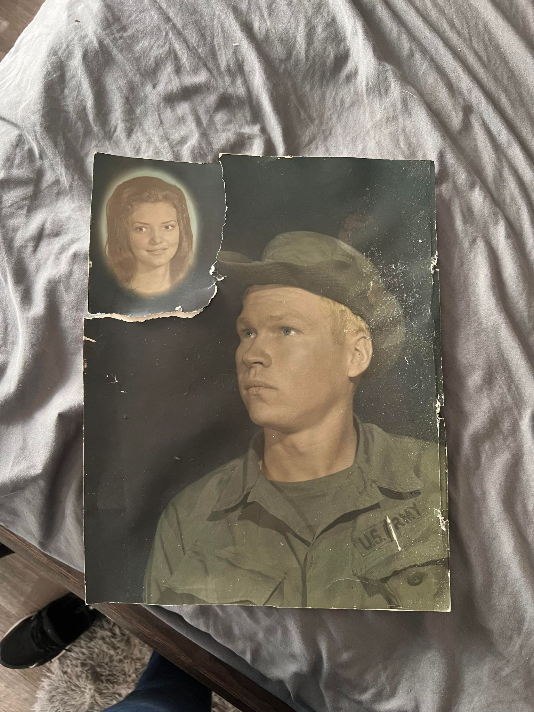

Turning Memories Into Masterpieces: The Art of Challenging Portrait Restoration

Every artist dreams of creating something meaningful, but not all commissions are created equal. Some artworks test your passion, patience, and skill—just like this portrait restoration project I recently completed.
A Client’s Request Like No Other
One of the most challenging works I’ve ever encountered came from a client who handed me an old, damaged photo. Their wish? To bring back the memory, and combine two beloved faces—captured separately in time—into a single, timeless portrait.
As an artist, I know how important every detail is when it comes to family memories. This commission required not just technical skills, but also imagination, empathy, and a genuine desire to make the client happy. It was both a test and an honor.

The Creative Process: Imagination Meets Technique
The original photos were faded, torn, and missing important details. I took inspiration from the reference images, but I had to rely on my own artistic judgment to fill in the gaps. Each brushstroke became a balance of realism and heart, carefully blending the past with the present.
“An imaginative mind is a must for every artist. It’s not just about copying a photo—it’s about bringing memories and dreams to life.”
Through patience and dedication, I used digital painting to restore the couple’s smiles and capture the emotion they shared—even if the original moments were never photographed together.
Why Commission a Portrait Restoration?
- Preserve family history for generations
- Celebrate love and memories through art
- Create a unique, meaningful keepsake
- Honor those you cherish, past or present
Whether it’s for a parent, grandparent, or a treasured friend, a custom portrait makes the perfect gift or heirloom.
Client Satisfaction: The Ultimate Reward
The best part? When I revealed the finished product, the client’s happiness made all the hard work worth it. Seeing tears of joy and hearing words of gratitude is why I do what I do.
Turn Your Memories Into Masterpieces
Do you have an old photo you wish could come alive again? Or maybe a dream portrait you want to make real? Let’s work together! I offer custom portrait restorations and original artworks tailored to your story.
Are you ready to have your treasured memories restored? Let’s make your story a masterpiece!